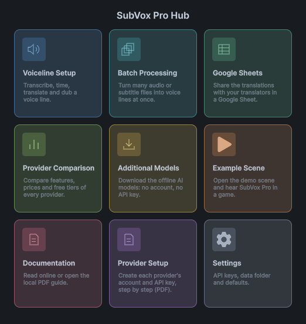
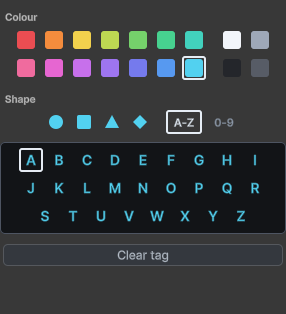
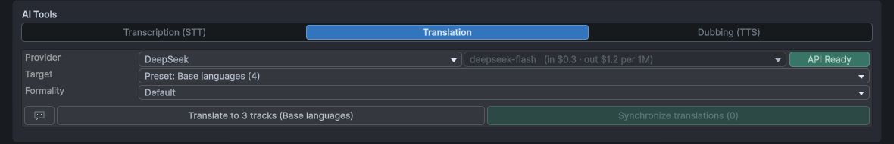

SubVox Pro
SubVox Pro turns your voice lines into synced subtitles and dubs, right inside Unity:
- Transcribe an audio clip into timed subtitles — with a cloud service or fully offline.
- Edit the timing on a waveform, style words, check reading speed.
- Translate into 50 languages and dub with text-to-speech, optionally in each character's own voice.
- Play everything in game with a few components, trigger gameplay events from a line, and drop lines onto Unity Timeline.
Contents
- Before you start
- Quick start
- The SubVox Pro window
- Transcribe
- Translate
- Dub with text-to-speech
- Speakers and voice personalities
- Edit the audio
- Play voice lines in your game
- Trigger gameplay from a voice line
- Unity Timeline
- Process many files at once
- Work with your AI assistant
- Offline engines (no account, no API key)
- Human translation with Google Sheets
- Settings
- Keyboard and mouse
- Supported languages
- Your data and online services
- AI-generated voices in your game
- Where your files go
- Updating and uninstalling
- Troubleshooting
- Support
Getting an account and an API key for each service is explained step by step in Provider Setup.
Before you start
- Unity 2022.3 LTS or newer (Unity 6 included), any render pipeline (Built-in, URP, HDRP).
- TextMesh Pro — import TMP Essentials once if your project hasn't already. On Unity 2022.3, first install the TextMeshPro package from the Package Manager (Unity 6 already includes it).
- Unity Timeline is optional: the Timeline features appear as soon as the package is installed.
- In game, SubVox Pro runs on every platform Unity supports.
- In the editor, SubVox Pro is tested on Windows. The cloud services, with your own API keys, should also work in the macOS and Linux editors, but have not been tested there yet. The offline engines (transcription, translation and dubbing without any account) need the Windows editor.
Quick start
From one audio clip to synced subtitles on screen in a few minutes.
Everything in SubVox Pro is also one click away in Tools ▸ SubVox Pro ▸ Hub: a window of tiles that opens the voice line editor, batch processing, Google Sheets, the provider comparison, the additional (offline) models, the MCP server for AI assistants, the example scenes, the documentation and the settings. The home screen has nine tiles. Documentation opens a second screen with Online (guide, providers and scripting reference, with an English/French language selector), Local (the English PDF, available offline) and Provider Setup (the same PDF, opened directly at its Provider Setup part). Back returns to the home screen.


1. Pick how you will transcribe. Either paste an API key for a speech-to-text service in Tools ▸ SubVox Pro ▸ Settings (where to get one), or, on Windows, use Whisper or Parakeet, which run offline for free (they offer to download their model the first time).
2. Create a voice line. Assets ▸ Create ▸ SubVox Pro ▸ Voice Line, select it and click Set Up Voice Line in the Inspector. The SubVox Pro window opens on a new voice line: check its Language (English the first time, then the last one you picked), choose Add an audio track and pick your clip, or record one.
Alternatively, right-click an audio file in the Project window and choose SubVox Pro ▸ Set Up Voice Line. Choose where to save the new voice line; the editor opens with that audio already assigned.

3. Transcribe. In AI Tools ▸ Transcription, pick the provider and the spoken language, click Analyze, then Split. Your subtitles appear on the waveform.
4. Adjust. Drag the markers on the waveform, fix the text in the list below, press Space to listen.
5. Show them in game. Drop the [SubVox Pro] and Subtitle Displayer prefabs (SubVoxPro/Prefabs) into
your scene, then play the line:
using SubVoxPro;
SubVox.Play(myVoiceLine);
Want to see it running first? Open Examples in the Hub (or Tools ▸ SubVox Pro ▸ Example Scenes): four ready-made scenes — a 3D temple, a 2D neon station, a noir visual novel and a first-person sandbox with one stand per feature — with voice lines in four languages, speech bubbles, dialogue sequences, voice events and subtitle options. Just press Play.
The SubVox Pro window

Open it with Tools ▸ SubVox Pro ▸ Voice Line Editor, or Set Up Voice Line on a voice line's Inspector. From top to bottom:
- Voice Line Data — the voice line you are editing, with buttons to create a new one, browse the others, split it and delete it. The colored dot is a tag shown on the asset's icon in the Project window, to sort your lines. The voice lines of the example scenes are kept apart in a closed Examples folder at the bottom of the list.
- Source — the AUDIO and SUBTITLES selectors. Each voice line has one source language (the flag; click it to change it) and one track per translated or dubbed language. The two selectors are independent, so you can, for example, read the French subtitles while listening to the English audio.
- AI Tools — transcription, translation and dubbing (below).
- Timeline — the waveform with your subtitle markers. Each marker is where a subtitle starts; a marker with no text clears the screen (a blank).
- Live preview — the subtitle under the playhead, as it will look in game. Pick a color or a style above it, then drag over words to paint them (right-drag erases).
- Subtitles — one row per subtitle: its name, length, speaker and text, with a button to play it.
Tags and languages
Click the tag beside Voice Line Data to choose both a color and a shape. Clear tag removes it. The shape helps distinguish voice lines without relying on color alone. Click A-Z or 0-9 to use a letter or a digit as the shape.

Click the source flag to choose the spoken language. Flags identify languages, not a speaker's nationality; the picker shows their names and codes so you do not have to recognize the flag.

Starting without audio

A voice line can start from text instead of audio: choose Add a subtitles track, then import an .srt file (subtitles with timings), a .txt file (one subtitle per line, timed automatically at a comfortable reading speed) or type the lines yourself. Set the Length of the line; it plays for that long in game until you add audio or generate a dub from the text.
Recording audio

Record with a microphone (in Add an audio track or the + next to the AUDIO selector) opens a small recorder: pick the microphone, watch the level, record, listen back, then Use recording. The take is saved as a WAV next to the voice line. On macOS, allow Unity to use the microphone in System Settings.
Adding your own dubs
Already have recorded dubs? Click the + next to the AUDIO selector and pick or record the clip. A window then asks which language it is:
- Replace a track — put it in place of the original audio or of an existing dub;
- Add a new track — pick its language to add it as a new dub.
The lines are placed proportionally on the new audio; drag the markers to fine-tune them. Translated lines in that language are shown over the dub when they exist.
Checking your subtitles
- Show CPS (in Settings) displays the reading speed of each line and flags lines that go too fast.
- Check Subtitles (shown with Show CPS) walks through every problem one at a time — empty or duplicate names, lines outside the clip, overlaps, lines too fast to read — with one-click fixes. Everything is undoable.
- Auto blanks hides the subtitle while nobody speaks, without adding markers. Turn it on in its popup and adjust how long a silence must be; the hidden parts are shaded on the waveform.
- Export SRT saves the subtitles as an
.srtfile.

Silence sets how much quieter a pause must be than the voice; Min pause ignores very short gaps. Hold out keeps the text briefly after the voice stops, and Lead in brings it back before speech resumes. Only between two lines prevents a subtitle from disappearing and reappearing in the middle of its sentence.
Deleting a voice line
The trash button deletes the voice line. It lists the files that go with it: the ones SubVox Pro generated (dubs, recordings) are selected, your own files are not, and a file still used elsewhere is locked. Everything goes to the system trash, so it can be recovered.
Splitting a voice line
When one voice line holds several moments you want to play separately, the split button (beside the trash) cuts it into several voice lines. Click between two subtitles to cut there, add as many cuts as you need, and name the new voice lines. A cut always falls between two subtitles, in the pause that separates them.
Each part keeps everything that belongs to its subtitles: audio, translations, dubs, speakers, audio effects and events. The first part stays in the current voice line, so your scenes and Timelines still point to it; the other parts are created next to it. Each part gets its own audio files, and your original files are kept. A split cannot be undone.
Transcribe

- Pick a Provider and, when it offers several, a Model. The badge on the right says whether it is ready (key set, or model downloaded).
- Set the Audio Language (some providers detect it on their own).
- Click Analyze: the audio is turned into timed words.
- Click Split: the words are grouped into subtitles. Split settings set the longest a subtitle may last, how early it appears before its first word, and whether lines should end on punctuation.
Word timing chooses where the timing of each word comes from: From the provider (default) keeps the timings returned by the transcription, Qwen3 aligner (local) places every word again on the audio right after Split, without changing the text — the most precise option for word-by-word subtitles (install it once). In a language Qwen3 does not support, the provider's timings are kept.
Providers: AssemblyAI, Gladia, Deepgram, Speechmatics, ElevenLabs, Rev AI, OpenAI, or Whisper and Parakeet offline. Not sure which one to take? Tools ▸ SubVox Pro ▸ Provider Comparison puts them side by side — price, free plan, commercial use, languages.

Tip: OpenAI gpt-transcribe returns text without word timestamps; timings are estimated over the clip. Use local alignment or a provider with word timestamps when timing matters.
Transcription works on the audio selected in the AUDIO selector, so you can also transcribe a dub.
Translate

- Pick a Provider: DeepL, Google Translate, OpenAI, Claude, Gemini, DeepSeek, or Hy-MT2 offline.
- Check one or several Target languages, or pick a preset, to create several languages at once.
- Set the Formality (formal or casual "you") if the language has one.
- Click Translate. Each language gets its own track; switch between them with the SUBTITLES selector.

In the Target popup, check as many languages as you want on the left, then Save as preset on the right to reuse them. Choosing a preset translates into all its languages in one operation; the right-hand column edits its name and languages.
Help the translator. Ambiguous lines translate better with context: write a global context for the whole voice line (speech-bubble button) and, if needed, a note on a single line (its speech-bubble button in the list).
Keep translations in sync. When you change a source line after translating it, its translations show an OUT badge: click Synchronize to re-translate only the lines that changed, or click the badge once you have checked the line. When you move markers so that a sentence is cut in a new place, the translated lines show a CUT badge: Fix splits asks an AI provider to cut the translation at the same meaning, without changing its words. Dubs follow automatically.
Dub with text-to-speech

- Select the language to dub in the SUBTITLES selector.
- In AI Tools ▸ Dubbing, pick a Provider and a Voice. The ▶ button next to a voice plays a sample. Use speakers' voices lets each line use the voice of its speaker.
- Choose the Generation mode:
- Each subtitle — one take per line: easiest to fix line by line;
- Per speaker — one take per group of lines from the same character: more natural flow;
- All together — one continuous take: the most natural, but everything is regenerated at once;
- Groups — you choose which words are spoken in one take (see below).
- Click Generate audio. The dub becomes a new audio track, played instead of the original when that language is active.
Groups mode. Choosing Groups turns on the Groups tool above the waveform. Each group is spoken in one take, with the voice and personality of its first word, and the subtitle text takes the group's color. At first, one group holds everything. Drag inside a group to split it in three, with the new group in the middle: it can start or end in the middle of a line, and each new group gets its own color. Drag the boundary between two groups to move it: pushing it past a whole group removes that group, and dragging back before releasing brings it back. Right-click a group to remove it: its neighbor takes its place. The bin button merges everything back into one group. Groups are saved per subtitle language.
Providers: InWorld, ElevenLabs, Gemini, OpenAI, Google Cloud, Azure, and offline Kokoro (English) and Chatterbox (21 languages, keeps each character's voice), plus Qwen3 TTS 1.7B (ten languages, reference cloning, fixed voices and voice design) and VoxCPM2 (30 languages, reference cloning with written style control, and voice design).
- Word timing — Qwen3 aligner (local) makes words appear exactly when they are spoken (install it once); Estimated spreads each line's words over its length; None keeps line timings only, if you don't reveal subtitles word by word. It starts on Qwen3 aligner once the aligner is installed, and on None before that.
- Voice direction — the speech-bubble button next to the voice gives the tone of the performance (for example calm, whispering), on the providers that understand it.
- REGEN — when a line's dub no longer matches (text, voice or personality changed), an orange REGEN chip appears on it. Hover it to see why, click it to regenerate only what is needed.
- Voice cloning — with ElevenLabs (paid plan), Chatterbox, Qwen Base or VoxCPM2, pick Original voice to dub each character in
their own voice, cloned from the source audio. You can also clone a voice from a clip placed in the
Voicesfolder of your data folder. Only clone voices you have the right to use.
OpenAI and some other services require telling your players that the voices are AI-generated — see Provider Setup.
Speakers and voice personalities
Speakers

A speaker is a character: a name shown before their subtitles, in their own color, and their voices for dubbing. Create one with Assets ▸ Create ▸ SubVox Pro ▸ Speaker or from the speaker picker in the window.
- Set the speaker of a whole voice line in the Speaker field above the list, or of a single line in its row.
- In the speaker's Inspector, Text-to-speech voices choose their voice per provider, with a fallback for every language and optional overrides per language.
- On the Subtitle Displayer (or Subtitle Document Displayer), Speaker Name Mode shows the name in front of the line (Inline), above it (Above), or not at all (Hidden). A speaker can also have its own font: Font (TextMeshPro) for the Subtitle Displayer, Font (UI Toolkit) for the Subtitle Document Displayer.
- Keep Background Between Subtitles leaves only the subtitle panel visible during a blank between two lines. It is on by default; a blank before the first line or after the last one still hides the panel.

The speaker picker groups characters by gender. The pencil edits an existing speaker; New speaker creates one. For a per-line override, the top entry returns to the voice line's default speaker.
Voice personalities
A personality is a reusable acting direction — Angry, Mysterious, Whispering… Create one from a speaker (New personality) or with Assets ▸ Create ▸ SubVox Pro ▸ Voice Personality, then either write the direction yourself or combine an emotion and a delivery, how strong they are, then the speed, volume, pitch and articulation. Click its icon to pick one of about forty symbols (emotions, moods, voice and character), so you recognize it at a glance in the lists.
Give each line a personality from its chip in the list (in Each subtitle mode), or use the speaker's default. Every provider applies what it can, in the form it understands: a written direction, audio tags or speaking styles; others only follow the pace. The chip's tooltip tells you what the selected voice will use. A personality sets how a line is performed, not who speaks: the age of a voice belongs to its description (see below).
Edit the audio
The buttons at the right of the timeline toolbar edit the audio itself. Every edit can be undone with Ctrl+Z.

The Audio effects button opens the effect list. Applied effects appear first; pick one to edit it, or use its cross to reset and remove it.
- Crop — drag the start and end handles, then Apply crop. It works on the source or on the selected dub and rewrites that audio file, so keep a copy of the full take if you may need it.
- Insert a pause / remove a segment (the
|↔|button) — left-drag to insert silence, right-drag to cut a part out. Subtitles, words and events after it move with the audio. Handy when a TTS voice runs two sentences together. - Audio effects — volume curve, fades, normalize, compressor, limiter, noise gate, filters, equalizer, telephone/radio, pitch, intonation, pan, distance muffling, room reverb. Draw where an effect applies on the timeline, set how with the sliders, then Apply effects. The magnet in the corner of a curve aligns points with the base value, 0 and their neighbors (hold Alt to place a point freely). SubVox Pro keeps your original audio so effects stay editable; Flatten makes them permanent, Discard removes them all.
- Voice filter — one click to change the whole voice: Telephone, Radio / walkie-talkie (with static and squelch), Robot, Cathedral, Behind a door, Monster or Inner voice. Pick the look in the Filter dropdown and set its strength with Intensity. The filter covers the whole line by default; lower its curve to keep part of the line clean. Cathedral rings on after each word but fades out at the end of the clip: leave a short silence after the last word to hear its echo.
- Intonation — the melody of the voice is shown on top; draw how much to raise (+) or lower (−) it in the lane below, where 0 leaves it unchanged. The magnet snaps your stroke to the step next to it (0.5 st by default; hold Alt to draw freely), and the wave smooths new strokes over the time you set (0 draws exactly what you trace). Right-drag restores the voice and Esc cancels a stroke. The rest of the line stays untouched. Pitch shifts a whole passage and shows the same melody. Both keep the voice natural; a few semitones (st) work best. The Engine dropdown offers WORLD (natural, default), PSOLA (lighter) or Classic (fastest; also changes the voice's character).

The volume curve above reduces only the selected passages. The waveform keeps the timing visible while the points control the gain; 0 dB leaves the original volume unchanged.

In Intonation, the upper curve shows the detected voice melody. The lower lane is your change, in semitones: positive raises the pitch, negative lowers it, and zero keeps the original. They are separate so you can see what the voice did and what you are changing.
Play voice lines in your game
Set up the scene
Drop the [SubVox Pro] prefab (
SubVoxPro/Prefabs) once into your startup scene. It plays voice lines and dispatches their events. (If you forget, a default player is created the first time a line plays, with a warning.)Drop the Subtitle Displayer prefab (
SubVoxPro/Prefabs) into the scene: a ready-made subtitle box at the bottom of the screen, which grows with long lines and hides between them. Restyle it freely (font, colors, position, size), or add the Subtitle Displayer component to your own Canvas and assign its Subtitle Text (and Background, to hide it between lines).Using UI Toolkit instead of a Canvas? Drop the Subtitle Document Displayer prefab instead. It shows the same subtitles, speaker names and styles in a UI Toolkit document. Restyle it in
Subtitle Document.uss(SubVoxPro/Prefabs/UI/UI Toolkit), or add the Subtitle Document Displayer component to your own UI Document and give it the name of the Label to fill (and of the element to hide between lines).
Play a line from code
Everything goes through SubVox. Ready-to-copy scripts for the common cases (waiting for a line, reacting to an
event, a language menu, an options menu, a dialogue log, video subtitles…) are in SubVoxPro/Example/Snippets, and
your code editor shows a description of every class, method and setting as you type. The full scripting
reference is online, next to this guide, with a page per version of SubVox Pro:
https://exnihilus.github.io/subvoxpro-docs/ (also from Documentation ▸ Online in the Hub).
using SubVoxPro;
SubVox.Play(myVoiceLine); // plays, with synced subtitles
SubVox.PauseAll(); // game paused
SubVox.ResumeAll();
SubVox.StopAll(); // cutscene skipped
SubVox.CurrentLanguage = "fr"; // French subtitles and dubs ("" = original)
SubVox.AudioLanguage = "ja"; // Japanese voices, whatever the subtitles (null = follow them)
Play gives back the line's playback: check its State, Time and Progress, pause or stop it, listen to its
Completed / Interrupted events, or wait for it in a coroutine:
yield return SubVox.Play(greeting); // waits until the line is over
yield return SubVox.Play(answer);
SubVox.IsPlaying(line) tells whether a line is being said, SubVox.Stop(line) stops only that line, and
SubVox.PlayAt(line, position) says a line once at a point in the world, like a voice from a loudspeaker.
To show a line somewhere else (a video, a menu), myVoiceLine.GetSubtitleAt(time, language) gives the subtitle at
any moment, and TryGetWordAt the word being said.
On the Voice Line Manager, Subtitle Reveal Mode shows subtitles one full line at a time (the default), word by word, or as Karaoke (the whole line, with the word being spoken highlighted); Timeline cutscenes follow it too. To lower the music while someone speaks, give it two Audio Mixer snapshots: Ducked Snapshot (music lowered) and Normal Snapshot.
Voices in 3D and several at once
Add a Voice Line Emitter to each character that speaks and set its AudioSource to 3D: the voice comes from the character, and several characters can talk at the same time.
npc.GetComponent<VoiceLineEmitter>().Play(barkLine, EVoiceLinePriority.Low);
Priorities keep important lines safe: on one emitter, a new line replaces the current one only if it is at
least as important; on screen, the subtitle of the most important line wins. To let a line wait for its turn
instead, play it with EVoiceLinePlayMode.Queue; EVoiceLinePlayMode.IfIdle plays it only if the emitter is free.
Skip() ends the current line at once, as for a "skip dialogue" button, and ClearQueue() drops the lines waiting
their turn. An emitter's Show Subtitles can be turned off for background chatter, and its VoiceLineCompleted /
VoiceLineInterrupted events tell you when a line ends; Paused / Resumed follow pauses. PlaybackSpeed plays
its lines faster or slower.
Lip-sync. An emitter's WordChanged event fires each time a new word is said (and between words), and
CurrentWord holds the word being said: enough to open a character's mouth or trigger a gesture.
emitter.WordChanged += word => mouth.SetBool("Talking", word.Text != null);
Voice-driven effects. An emitter's Loudness tells how loud the voice is right now, from 0 (silence) to 1: use
it to make a halo pulse, a light flicker or a speaker icon glow while a character talks. It follows the language
being heard, and it is measured for you when you save a voice line or its audio — nothing to set up.
halo.intensity = Mathf.Lerp(halo.intensity, emitter.Loudness * 3f, Time.deltaTime * 20f);
Melody voice. For "Animal Crossing"-style voices, add a Melody Voice Modifier next to a character's emitter: each spoken syllable plays a short blip that follows the melody of the voice, in every language and with nothing to generate (set Blip On to Word for one blip per word). Choose Replace to hear only the blips, or Background to play them over the voice, softer and an octave above it so the words stay clear. Give each character its own register with Base Pitch (higher for a small character, lower for a big one), pick a Preset (a blip, or a piano, music box, marimba or guitar note) or your own Custom Sound, and set how closely the blips follow the voice with Pitch Range. For instruments, set Scale to Pentatonic (or Major for a cheerful tune, Minor for a sad one): every note is then tuned to the scale, in the key of the character's voice, so the melody sounds in tune. Lines without audio still get blips, with a light random variation.
Speech bubbles. Select a character and use GameObject ▸ SubVox Pro ▸ Subtitle Bubble: a bubble appears above its head and shows only what this character says. Turn off its emitter's Show Subtitles to keep those lines out of the bottom of the screen.
Without code
- Voice Line Zone — plays a line when the player enters a trigger (2D or 3D), once or with a cooldown. It can wait for the character to finish speaking (Play mode: Queue), stop the line when the player leaves, and play again the next time the player comes in.
- Voice Line Play On Start — plays a line when the object starts, after an optional delay.
- Voice Line Bank (Assets ▸ Create ▸ SubVox Pro ▸ Voice Line Bank) — several lines to pick from, such as a guard's barks: at random without saying the same thing twice in a row, shuffled, or in order. Put it in the Bank field of a zone or of Play On Start.
- Voice Line Sequence (Assets ▸ Create ▸ SubVox Pro ▸ Voice Line Sequence) — a dialogue: a list of lines
that follow each other, automatically or when you call
Advance();Previous()goes back one line, for a "previous line" button. Play it with a Voice Line Sequence Player, whose Inspector shows the progress in Play mode. Set its Direction to Backward to play the lines from the last to the first. If its character is busy with a more important line, the dialogue waits, then picks up after a short Resume Delay.
Each of them has an Emitter (empty = the default one) and a Priority, and a public Play() you can call
from a button or any UnityEvent.
Switching language
Changing the language switches the subtitles on screen immediately. The dubbed audio follows from the next line, since a line can't change language in the middle of a sentence.
Audio in another language — by default the voices follow the subtitle language. To let players hear one language and read another (Japanese voices with French subtitles, for instance), set
SubVox.AudioLanguage; set it back tonullto follow the subtitles again. The example scenes show both pickers.Unity Localization — if your project uses Unity's Localization package, SubVox Pro follows the language chosen there automatically. To set the language yourself instead, set Language Source to Manual on the Voice Line Manager.
Speaker names — a speaker can show a different name in each language: fill in its Localized Names, or, with Unity Localization, point its Localization Table and Localization Entry at a string.
Close languages — a player in
pt-BRhears and reads apttranslation when there is nopt-BRone (and the other way round).Language menu —
myVoiceLine.GetSubtitleLanguages()andGetAudioLanguages()list what a voice line offers.
Subtitle options for players
Wire these to your options menu; every subtitle display follows them at once:
SubVox.SubtitlesEnabled = false; // no subtitles (voices carry on)
SubVox.SubtitleScale = 1.5f; // bigger text
SubVox.BackgroundOpacity = 1f; // opaque box behind the text
SubVox.FadeDuration = 0.2f; // subtitles fade in and out
SubVox.RevealMode = EVoiceLineSubtitleRevealMode.Karaoke; // whole line, spoken word highlighted
SubVox.History keeps the last lines shown (text, speaker), to build a dialogue log screen.
Your own subtitle display
The displayers cover most needs. To draw subtitles your own way, listen to
SubVox.SubtitleUpdated, which gives you the subtitle to show whenever it changes (empty text means
"clear the screen"). Read SubVox.CurrentSubtitle just after subscribing, so your display also shows a line
that was already playing. The built-in displayers do this automatically when enabled or re-enabled; a speech
bubble reads its own emitter's current subtitle instead.
SubVox.DisplayedVoiceLine gives the voice line selected for the global display, including a Timeline clip.
SubVox.PublishSubtitle(...) shows your own text on the displayers, for example during a video. Custom
publications are ignored while a SubVox Timeline clip is active, because that clip owns the display.
To only tweak a displayer (change the text, animate the box), create a script that inherits from it and override
ComposeText or SetVisible. The other components can be extended the same way.
Playing the audio with FMOD, Wwise or a video
Import the voice line's audio (and its dubs) into your audio tool as usual, then let the emitter follow your audio instead of playing it:
class FmodClock : IVoiceLineAudioClock
{
public FMOD.Studio.EventInstance Instance;
public float Time { get { Instance.getTimelinePosition(out int ms); return ms / 1000f; } }
public bool IsPlaying { get { Instance.getPlaybackState(out var state); return state != FMOD.Studio.PLAYBACK_STATE.STOPPED; } }
}
emitter.PlayExternal(myVoiceLine, clock); // subtitles and events follow your audio
// then start the audio of emitter.CurrentAudioLanguage ("" = original, otherwise that dub)
Pausing or stopping the emitter only affects the subtitles and events: pause or stop your audio as well.
Trigger gameplay from a voice line

Open a door on "Run!", shake the camera on a scream: events fire at a moment of a voice line.
- Switch the timeline to Events and click + Event (or middle-click the waveform).
- Give it a signal — a small reusable asset that names the event, such as Camera Shake.
- Choose when it fires: at the start or end of the voice, at a time, or on a subtitle or a word (it then follows that word if the timing changes). Drag the diamond to move it.
Then react to it in one of three ways:
No code — add a Voice Line Event Receiver to an object, pick the signal and connect a UnityEvent.
An attribute — mark any method of a MonoBehaviour with the generated signal constant (the signal Inspector copies it):
[VoiceLineEvent(SubVoxEvents.CAMERA_SHAKE)] private void Shake() { // ... }Set the signal's optional Category to a
/-separated hierarchy such asCamera/Effectsto generateSubVoxEvents.Camera.Effects.CAMERA_SHAKE. Constants regenerate when signals are saved, renamed, created or deleted. Renaming a key or category deliberately leaves old references as compiler errors; string keys such as[VoiceLineEvent("Camera Shake")]remain supported.The constants live in your data folder (
Generated/SubVoxEvents.g.cs), so plugin updates never overwrite them. Scripts without an assembly definition see them directly; if your scripts have one, add a reference to SubVoxPro.Events.The [SubVox Pro] prefab finds these methods on its own. If you create objects at runtime, call
VoiceLineEventDispatcher.Register(this)from them. On a very large scene, you can untick Scan Scenes Automatically on the dispatcher and register your objects yourself.C# —
SubVox.Subscribe(signal, MyMethod)calls your method each time that signal fires (SubVox.Unsubscribeto stop).
An event can also carry a Payload — any asset delivered with the event; a method that takes that asset type as its parameter receives it — and be limited to once per playback. Events only run in Play mode, never while you edit or scrub.
Unity Timeline
- In your Timeline, Add ▸ Voice Line Track.
- Drag a voice line onto it. A subtitle clip is created, with its audio on a separate Voice Line Audio track.
- Bind that audio track to an AudioSource, like any Audio Track.
- Make sure the scene has a Subtitle Displayer (the prefab is the quickest).
Audio and subtitles stay in sync, including while scrubbing. Dropping a Voice Line Sequence lays out all its lines. Events of the voice line fire during playback; to move them as Timeline markers, right-click the clip and choose SubVox Pro ▸ Bake Voice Events to Timeline.
The cutscene plays the dub of the audio language (the current language unless SubVox.AudioLanguage is set) when
the line has one, with its subtitles in sync. The language
is picked when the Timeline starts playing. A clip follows the manager's Subtitle Reveal Mode, unless you tick
Override Reveal Mode on it.
An active SubVox clip has priority on the global subtitle display. Other voice lines keep playing, but their subtitles cannot replace the clip's text, including during a blank or before its first subtitle. A blank inside the clip follows Keep Background Between Subtitles as usual.
When the clip ends or the director is stopped, the display immediately returns to the highest-priority emitter still playing, at its current position; its audio is not restarted. If no emitter is playing, the panel hides. When several SubVox Timeline tracks or directors overlap, the most recently entered clip takes priority; ending another clip does not clear its subtitles. Pausing the director keeps its selected subtitle until playback resumes or the director is stopped.
Process many files at once

Tools ▸ SubVox Pro ▸ Batch Processing turns a list of audio or .srt files into voice lines in one go.
To queue audio already in your project, select several audio files, right-click and choose SubVox Pro ▸ Batch Processing. The files are added to the existing queue without starting the batch; duplicates are ignored. Wait for a running batch to finish before adding files this way.
- Drop files or folders, or use Add files… / Add folder… (subfolders included). A line under the buttons tells you how many files were added.
- Turn on the steps you need — Transcription, Translation, Dubbing — and set them up once for all files. Transcription and translation each have a Model choice, shared with the main window. A file can override its languages. To clear a voice chosen for a language, right-click it. The batch offers One per line and All together for dubbing; Groups are drawn per voice line in the editor. With many languages, the voice list scrolls.
- Check the Estimated cost (its total is shown on the folded header; click it to see the detail), then click Run batch. The button stays grayed out until everything is ready, and tells you what is missing. If the length of an audio file cannot be read, the estimate says so and does not count it.
Each file becomes its own voice line. The batch does one step for all files before the next one (for example every transcription, then every translation, then every dub), which is faster with the offline engines. You can cancel at any time and export a report of the run; clicking Run batch again picks up where each file stopped, even after restarting Unity, without copying the audio a second time. When a step is skipped (for example a language the dubbing provider cannot voice), a ⚠ line under the file explains why and the file reads Done with warnings. Once a file is done, Open shows its voice line in the editor, and Re-run queues its translation and dubbing again (for example after adding a language).
Work with your AI assistant
An AI assistant that supports MCP (Claude Code, Claude Desktop, Codex, Cursor, VS Code Copilot, Windsurf…) can use SubVox Pro for you: list your voice lines, read their subtitles, transcribe, translate, dub, fix a line's text or set its speaker. Just ask it, for example "Transcribe the intro voice line and translate it into French and Spanish".
Setup (once per project):
- Open Tools ▸ SubVox Pro ▸ MCP Server (also a tile of the Hub) and click Start. To start it with Unity each time you open the project, turn on Start MCP server with Unity in the SubVox Pro settings (Preferences).
- Under Your assistants, SubVox Pro lists the assistants installed on your computer. Click
Connect my assistants: it adds itself to all of them at once. Nothing else to install. Your other MCP servers
are left as they are, and each file it changes keeps a copy next to it (
.subvox-backup). - Restart your assistants (or reload their MCP servers), then just ask. Once an assistant has connected, its row shows Connected at and the time.
- Keep the Unity editor open with your project: the assistant works through it.
For an assistant that is not in the list, copy the address shown at the bottom of the window and add it as an MCP server in its settings.
Codex covers the Codex app, its command line and its code editor extension in one go. The ChatGPT app itself cannot be connected: it only reaches servers on the internet, not on your computer.
If another program already uses the port, pick another number in the window: the connected assistants get the new address by themselves (restart them).
The SubVox Pro tools all start with subvox_:
| Tool | What it does |
|---|---|
subvox_list_voicelines |
Lists your voice lines with their languages and length. |
subvox_get_voiceline |
Reads the lines of a voice line (text, start time, speaker), and a translation if asked. |
subvox_list_speakers |
Lists your speakers. |
subvox_list_providers |
Lists the transcription, translation and dubbing services, and which ones are ready. |
subvox_create_voiceline |
Creates a voice line from an audio clip of your project. |
subvox_transcribe |
Transcribes the voice line's audio into subtitles. |
subvox_translate |
Translates the subtitles into one or more languages. |
subvox_dub |
Generates the dubs of translated languages. |
subvox_set_subtitle_text |
Changes the text of one line, in the source language or a translation. |
subvox_set_speaker |
Sets the speaker of the whole voice line or of one line. |
Costs stay under your control. Before using a paid online service, or replacing subtitles or dubs that already exist, the assistant first gets an estimate of the cost and of what would be replaced, and must ask you before going on. To skip either question, turn off Assistants ask before paid runs or Assistants ask before overwriting in the SubVox Pro settings (Preferences), or Ask before paid runs / Ask before overwriting in the MCP Server window. Offline engines are free. The services, models and voices are the ones you set in SubVox Pro; the assistant can choose another one for a single run without changing your settings.
Changes made by the assistant show up in the open SubVox Pro window. Transcriptions, translations and text or speaker changes can be undone with Ctrl+Z.
Offline engines (no account, no API key)
On the Windows editor, SubVox Pro can do everything offline, for free, on your own machine. Each engine is downloaded once (the button next to its provider says Setup model or Install…) and shared by all your projects. Tools ▸ SubVox Pro ▸ Additional Models (also a tile of the Hub) lists them all in one window, with their status, a Download button for each, and Uninstall to free the disk space again. Each engine shows the minimum and recommended computer it needs. A graphics card makes them much faster, but they also run without one.
| Engine | Does | Download | Languages |
|---|---|---|---|
| Whisper | Transcription | 1.6 GB (up to 3.1 GB for the larger models) | Many, with automatic detection |
| Parakeet | Transcription, fast even without a graphics card | 670 MB | 25 European languages, detected automatically |
| Hy-MT2 | Translation | 1.1 GB, or 4.6 GB for the more accurate model | 37 of the 50 target languages (not Danish, Swedish, Finnish, Norwegian, Greek, Hungarian, Romanian, Bulgarian, Slovak, Slovenian, Estonian, Latvian, Lithuanian) |
| Kokoro | Dubbing | 370 MB | English (US and UK voices) |
| Chatterbox | Dubbing, in each character's own voice or 20 ready-made ones | 3.3 GB | 21 languages, + Japanese with an optional 6 MB add-on |
| Qwen3 TTS 1.7B | Dubbing: cloned, preset or described voices | 2.4 GB per model | 10 languages |
| VoxCPM2 | Dubbing with cloned voices that follow your personalities | 3.6 GB | 30 languages |
| Qwen3 Aligner | Exact word timing, on transcriptions and dubs | 1.0 GB | 11 languages |
Whisper (offline transcription)

Pick Whisper in the Transcription tab and click Setup model. Large v3 Turbo is the recommended model: fast, and nearly as accurate as the full-size ones. With a graphics card, a short voice line is transcribed in about a second.
Parakeet (offline transcription, European languages)

Pick Parakeet in the Transcription tab and click Setup model (670 MB). NVIDIA's Parakeet TDT gives punctuated text with word timings and recognizes the spoken language on its own, so there is nothing to set. It is fast on any recent processor, even without a graphics card: a short voice line takes a fraction of a second, two minutes of audio a few seconds. Languages: Bulgarian, Croatian, Czech, Danish, Dutch, English, Estonian, Finnish, French, German, Greek, Hungarian, Italian, Latvian, Lithuanian, Maltese, Polish, Portuguese, Romanian, Russian, Slovak, Slovenian, Spanish, Swedish and Ukrainian. For other languages, use Whisper.
Hy-MT2 (offline translation)

Pick Hy-MT2 in the Translation tab and click Setup model. The 1.8B model is fast on any machine; the 7B model follows your context notes better, and is best with a graphics card that has 8 GB of memory. Both respect your context notes and the formality setting.
Kokoro (offline English dubbing)
Pick Kokoro in the Dubbing tab and click Install Kokoro…. It comes with 11 English voices.
Chatterbox (offline dubbing in 21 languages)

Pick Chatterbox in the Dubbing tab and click Install Chatterbox…. Its voices:
- Original voice (default) — each character keeps the voice heard in the original audio, in every language;
- 20 ready-made voices (a female and a male voice in ten languages), synthetic and free to use commercially — the same ones as Qwen3 and VoxCPM2;
- Chatterbox default voice;
- your own clips — any clip placed in the
Voicesfolder of the data folder (5–10 seconds of one clear voice).
Languages: Arabic, Chinese, Danish, Dutch, English, Finnish, French, German, Greek, Hindi, Italian, Korean, Malay, Norwegian, Polish, Portuguese, Russian, Spanish, Swahili, Swedish, Turkish, and Japanese after installing its support from the same window. Exaggeration, under the provider in the Dubbing panel (also in Batch Processing and the Settings), makes the delivery more or less expressive. Each generation is slightly different: if a word comes out wrong, generate it again. Some languages come out more reliably than others: see how reliable each language is.
Qwen3 TTS 1.7B (offline multilingual dubbing)
Pick Qwen3 TTS 1.7B in the Dubbing tab and click Install…. It speaks Chinese, English, Japanese, Korean, German, French, Russian, Portuguese, Spanish and Italian, and comes in three models; install the ones you need (about 2.4 GB each):
| Model | Voices | Personalities and retouch directions |
|---|---|---|
| Base - Voice Cloning | Original voice, 20 ready-made voices (a female and a male voice per language), your clips in the Voices folder |
Not followed: the voice keeps the delivery of its reference |
| Custom Voice - 9 Preset Voices | Vivian, Serena, Uncle Fu, Dylan, Eric, Ryan, Aiden, Ono Anna and Sohee | Followed |
| Voice Design - Text Description | A voice you describe in words | Followed |
- Base clones a voice. The ready-made voices are synthetic and free to use commercially. To clone your own voice, choose Record a reference… in the voice picker and read the text shown for 8–12 seconds in a quiet room.
- Custom Voice voices speak every language, but each keeps a slight accent of its own language.
- Voice Design: describe each character's voice (age, timbre, accent…) under Voice description in its speaker asset, then pick Use speakers' voices. The Age menu under the description adds the apparent age for you. For one voice for the whole line, describe it in the Dubbing panel instead. The same description can sound slightly different from one take to the next; use Base when the voice must stay identical.
Use GPU in the Settings speeds up generation with a graphics card.
VoxCPM2 (offline voice cloning with style control)
Pick VoxCPM2 in the Dubbing tab and click Install… (3.6 GB). VoxCPM2 clones a voice and also follows your personalities and retouch directions, in 30 languages: Arabic, Burmese, Chinese, Danish, Dutch, English, Finnish, French, German, Greek, Hebrew, Hindi, Indonesian, Italian, Japanese, Khmer, Korean, Lao, Malay, Norwegian, Polish, Portuguese, Russian, Spanish, Swahili, Swedish, Filipino, Thai, Turkish and Vietnamese.
Its voices are the same as Qwen3 Base: Original voice, the 20 ready-made voices, your clips in the Voices
folder, or Record a reference…. Write directions in English or Chinese, for example Speak softly, with a sad tone or Whisper quietly: they work best in these two languages, whatever the language of the line. A ready-made
voice keeps a slight accent outside its own language; for a perfect accent, use a reference recorded in the dubbed
language. Use GPU in the Settings speeds up generation with a graphics card.
To create a voice that does not exist, pick Designed voice and describe it, for example A deep, calm male voice in his fifties, or choose an Age under the description. The voice is created the first time you generate, then kept for every line, so a character always
sounds the same; your personalities still set the tone. For a different voice per character, write the description
on each speaker and set their voice to Designed voice.
Qwen3 (offline word timing)
Set Word timing to Qwen3 aligner (local) in the Transcription or Dubbing tab and click Install…. From then on, each Split of a transcription and every generated dub are aligned word by word automatically, so word-by-word subtitles match the voice exactly. It only places the words — it never changes your text. Languages: Chinese, Cantonese, English, French, German, Italian, Japanese, Korean, Portuguese, Russian and Spanish, for audio up to 5 minutes.
Downloads stop if scripts recompile or you enter Play mode: just start them again from the same window, they resume where they stopped.
Human translation with Google Sheets
Hand your lines to translators in a shared Google Sheet and bring their work back, in both directions.
Setup (once)
- Google Cloud — at https://console.cloud.google.com, create a project and enable the Google Sheets API. Under OAuth consent screen, choose External and add yourself and your translators as Test users. Then create an OAuth client ID of type Desktop app and copy its Client ID and Client secret.
- The Sheet — create an empty Google Sheet, copy its ID from the URL (between
/d/and/edit) and share it as Editor with your translators. - Unity — open Tools ▸ SubVox Pro ▸ Google Sheets Localization, paste the three values and click Connect, then sign in in the browser.
Every day
Translators fill the language columns and mark each line reviewed or final. Click Sync with Sheet: SubVox Pro shows every difference, Unity on one side and the Sheet on the other, and you choose which to keep before anything is written. The key columns of the Sheet are locked, so translators can only edit translations. Statuses are colored (reviewed in amber, final in green) and empty translations are tinted, so the remaining work is easy to see. Each voice line starts with a dark title row; fold or unfold its lines with the + / − button in the left margin.
A line added only in the Sheet is never imported (a subtitle needs a timing), but it is never deleted without asking either. Two kinds of rows are set to Drop by default, so one sync cleans them up: a Duplicate (the same line appears twice in the Sheet) and a Removed line (it no longer exists in Unity, for example after re-cutting the subtitles). Click Keep to leave one in the Sheet.
The button next to the Spreadsheet ID opens the Sheet in your browser.
Settings

Tools ▸ SubVox Pro ▸ Settings:
- API Keys — one key per service. Keys stay on this computer: they are never saved in your project, committed or shipped. The eye at the end of a row shows or hides the key, the red cross removes it.
- Preferences — Native language names (show languages under their own name, such as Français or 日本語, instead of in English; off by default), Show CPS (reading speed), Custom inspectors, Auto blanks on new lines, Start MCP server with Unity (off by default), Assistants ask before paid runs and Assistants ask before overwriting (on by default).
- Project languages — the languages of your game. They come first wherever you pick a language (for example the Current Language of the Voice Line Manager); every other language stays available below them. English (UK) is set by default. Click Add languages and tick as many languages as you need; untick one to remove it.
- Data folder — where new voice lines, speakers and dubs are created.
- Cloud Model Catalog — cloud AI models and their prices, updated online. Manage models lets you add one that isn't listed yet. Local models are selected and installed through Additional Models and their provider's controls.
- Local models & services — each offline engine with its status (Ready or Not installed), its options (graphics card use, Chatterbox expressiveness) and a button to install or set it up; plus the cleanup of ElevenLabs voice clones.
Keyboard and mouse
In the SubVox Pro window (shortcuts are ignored while you type in a text field):
| Shortcut | Action |
|---|---|
| Space | Play / pause from the playhead |
| ← / → | Nudge the selected marker (or word, or event) by 50 ms |
| Shift + ← / → | Snap the selected marker to the previous / next word |
| Ctrl + ← / → | Select the previous / next marker (or word, or event) |
| Delete | Delete the selected marker or event |
| Ctrl + Z | Undo |
| Mouse on the waveform | Action |
|---|---|
| Click | Move the playhead |
| Drag | Move a marker, a word or an event |
| Drag the playhead's head or foot | Move the playhead while editing an audio effect |
| Shift + click or middle-click | Add a marker (or an event, in Events mode) |
| Right-click | Delete a marker or an event |
| Scroll / Ctrl + scroll | Zoom / pan |
The Markers, Words and Events buttons above the waveform choose what you edit. In the list, double-click a row to play that subtitle.
Supported languages
✓ available · ◐ depends on the provider or voice you pick · — not available
| Language | Transcription | Translation | Dubbing | Word timing on dubs |
|---|---|---|---|---|
| Arabic | ✓ | ✓ | ✓ | — |
| Bengali | ◐ | ✓ | ✓ | — |
| Bulgarian | ✓ | — | ✓ | — |
| Burmese | ◐ | ✓ | ✓ | — |
| Cantonese | ◐ | ✓ | ◐ | ✓ |
| Chinese (Mandarin) | ✓ | ✓ | ✓ | ✓ |
| Chinese (Traditional) | ◐ | ✓ | ◐ | — |
| Croatian | ✓ | — | ✓ | — |
| Czech | ✓ | ✓ | ✓ | — |
| Danish | ✓ | — | ✓ | — |
| Dutch | ✓ | ✓ | ✓ | — |
| English | ✓ | ✓ | ✓ | ✓ |
| Estonian | ✓ | — | ✓ | — |
| Filipino | ◐ | ✓ | ✓ | — |
| Finnish | ✓ | — | ✓ | — |
| French | ✓ | ✓ | ✓ | ✓ |
| German | ✓ | ✓ | ✓ | ✓ |
| Greek | ✓ | — | ✓ | — |
| Gujarati | ◐ | ✓ | ✓ | — |
| Hebrew | ◐ | ✓ | ✓ | — |
| Hindi | ✓ | ✓ | ✓ | — |
| Hungarian | ✓ | — | ✓ | — |
| Indonesian | ◐ | ✓ | ✓ | — |
| Italian | ✓ | ✓ | ✓ | ✓ |
| Japanese | ✓ | ✓ | ✓ | ✓ |
| Kazakh | ◐ | ✓ | ✓ | — |
| Korean | ✓ | ✓ | ✓ | ✓ |
| Latvian | ✓ | — | ✓ | — |
| Lithuanian | ✓ | — | ✓ | — |
| Malay | ◐ | ✓ | ✓ | — |
| Maltese | ✓ | — | ◐ | — |
| Marathi | ◐ | ✓ | ✓ | — |
| Mongolian | ◐ | ✓ | ✓ | — |
| Norwegian | ◐ | — | ✓ | — |
| Persian | ◐ | ✓ | ✓ | — |
| Polish | ✓ | ✓ | ✓ | — |
| Portuguese | ✓ | ✓ | ✓ | ✓ |
| Romanian | ✓ | — | ✓ | — |
| Russian | ✓ | ✓ | ✓ | ✓ |
| Slovak | ✓ | — | ✓ | — |
| Slovenian | ✓ | — | ✓ | — |
| Spanish | ✓ | ✓ | ✓ | ✓ |
| Swahili | ◐ | — | ✓ | — |
| Swedish | ✓ | — | ✓ | — |
| Tamil | ◐ | ✓ | ✓ | — |
| Telugu | ◐ | ✓ | ✓ | — |
| Thai | ◐ | ✓ | ✓ | — |
| Turkish | ✓ | ✓ | ✓ | — |
| Ukrainian | ✓ | ✓ | ✓ | — |
| Urdu | ◐ | ✓ | ✓ | — |
| Vietnamese | ◐ | ✓ | ✓ | — |
Your data and online services
SubVox Pro sends something to an online service only when you start an action that uses it. It sends it straight from your computer, with your own API key, and only what that action needs:
| Action | What the provider receives |
|---|---|
| Transcribe | The audio of the voice line |
| Translate, Fix splits | The subtitle text, the language names and the context notes you wrote |
| Dub, voice preview | The text to speak, the voice and personality settings, and the reference audio when you clone a voice |
| Google Sheets | The subtitle text, sent to a sheet in your own Google account |
Nothing is sent to the publisher of SubVox Pro: there is no account and no usage tracking. SubVox Pro only downloads the list of models from GitHub, and the models themselves when you click Download. The offline engines keep everything on your computer.
What a provider does with your data (storage, use for training, commercial use on free plans) depends on its own terms, summarized in Provider Setup. For scripts or recordings you may not share, use the offline engines.
AI-generated voices in your game
- Tell your players. OpenAI requires telling players that the voices they hear are AI-generated, and some stores, such as Steam, ask you to declare AI-generated content when you publish. A line in the credits or the settings menu is a common way to do it.
- Clone only voices you have the right to use. Get the written consent of the actors whose voices you clone. The reference voices that come with the offline engines are free to use.
- Check the plan you use. Some free plans forbid commercial use: see the free-tier table in Provider Setup.
- Have translations reviewed. Before shipping, a native speaker can check them in Google Sheets.
Where your files go
Your work is saved in the data folder, Assets/Data/SubVoxPro/ by default (change it in
Settings). It sits outside the SubVox Pro folder, so updating the asset never touches it.
| What | Where |
|---|---|
| Voice lines | Voicelines/ in the data folder |
| Dubs and microphone recordings | Dubs/ and Recordings/, next to the voice line |
| Speakers and personalities | Speakers/ in the data folder |
| Event signals | Event Signals/ in the data folder |
| Clips for voice cloning | Voices/ in the data folder |
| API keys | This computer's Unity preferences — never in the project |
| Offline engines | Your user folder (AppData/Local/SubVoxPro), shared by all projects |
Updating and uninstalling
Updating
- Commit or back up your project.
- Import the new version from Window ▸ Package Manager ▸ My Assets. Your data folder, settings, API keys and downloaded models are kept. If you moved the SubVox Pro folder, the update follows it.
- Restart Unity, so the new offline engine files are used.
Uninstalling
- Remove the SubVox Pro components from your scenes and prefabs.
- To remove the API keys from this computer, click Clear API Keys in Settings. If you connected a Google account, also click Disconnect in the Google Sheets window and in the Google Cloud TTS sign-in.
- To free the disk space used by the offline engines, click Uninstall for each one in Additional Models. They are shared by all your projects, so only do this if no other project uses them.
- Delete the SubVox Pro folder,
Assets/Editor/SubVoxPro(the settings) and, if you no longer need your voice lines, the data folder (Assets/Data/SubVoxProby default). If you keep it, delete at least itsGeneratedfolder, which needs SubVox Pro to compile.
Temporary files are deleted by Unity when it closes.
Troubleshooting
- An offline engine fails to load, mentioning a missing DLL — install the latest Microsoft Visual C++ Redistributable (x64) from Microsoft, then restart Unity.
- A download stopped — scripts recompiled or Play mode started. Open the same setup window again: it resumes.
- Gemini dubbing slows down or stops — the free Gemini plan allows only a few voice requests per minute and per day. SubVox Pro waits and retries on its own; Per speaker or All together send fewer requests, and enabling billing on your Google project lifts the limit.
- The recorder finds no microphone on macOS — allow Unity in System Settings ▸ Privacy & Security ▸ Microphone.
- Nothing shows on screen in game — check that the scene has a Subtitle Displayer with its text assigned, and that the line plays on an emitter whose Show Subtitles is on.
Support
Questions, bugs and feature requests: **exnihilus.assets@gmail.com**. Please include your Unity version, the provider or engine involved, and the error from the Console if there is one.
SubVox Pro © 2026 Louis Nillus (ExNihilus). All rights reserved. Licensed under the Unity Asset Store EULA.